Motorsport · Concepción, Chile · May 2019 · 31 photos
WRC Rally Chile 2019
Copec Rally Chile, round six of the 2019 FIA World Rally Championship and the first time the WRC ran in Chile. Fast gravel roads through the pine forests of the Biobío region, low autumn sun, and dust hanging in the light long after each car had gone.

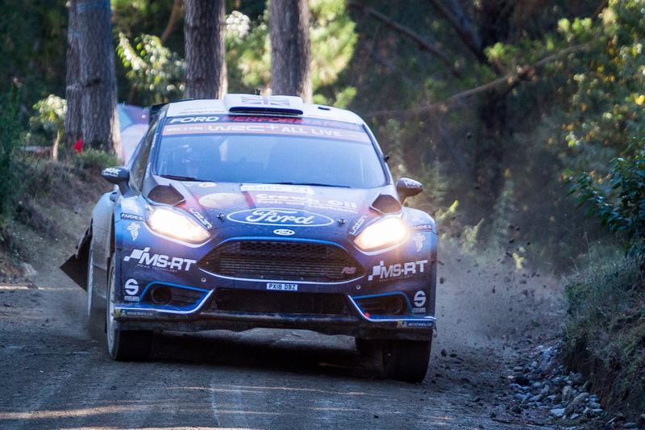
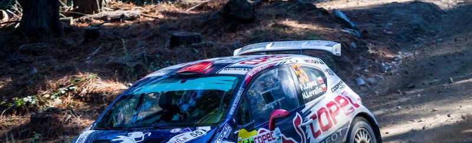
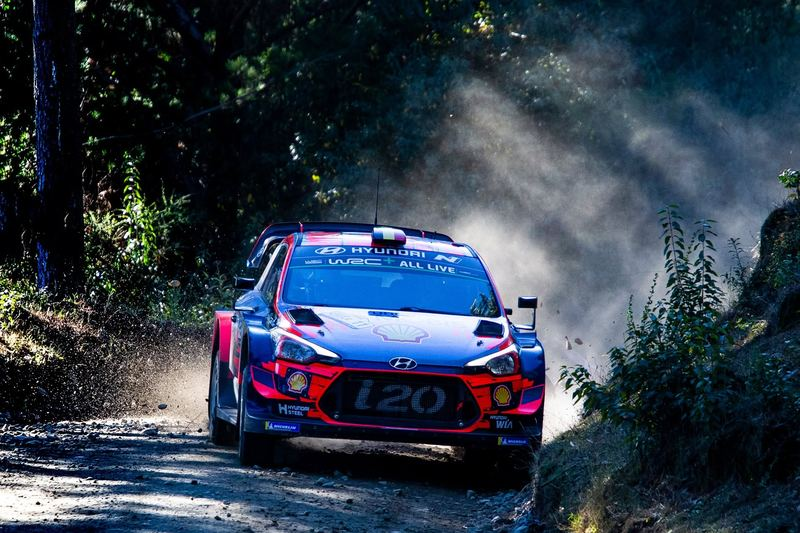
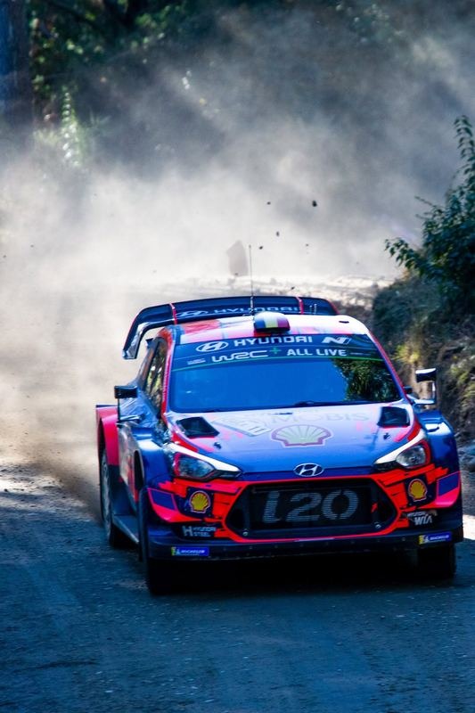
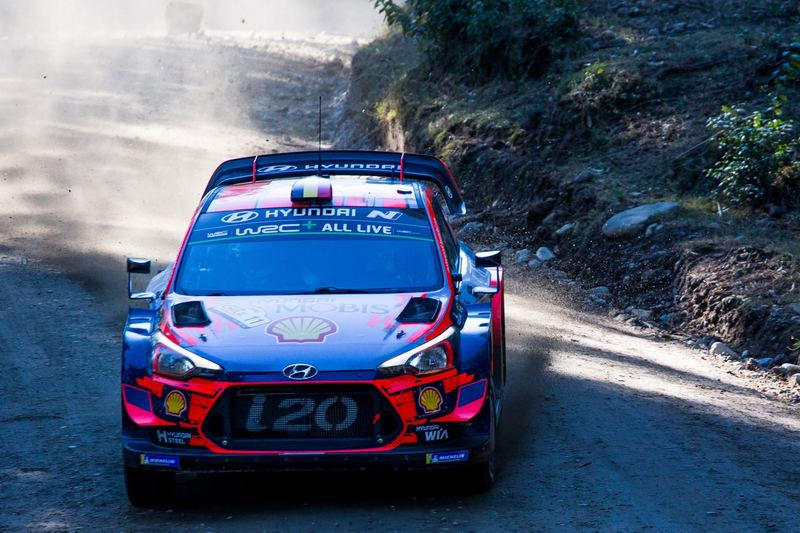
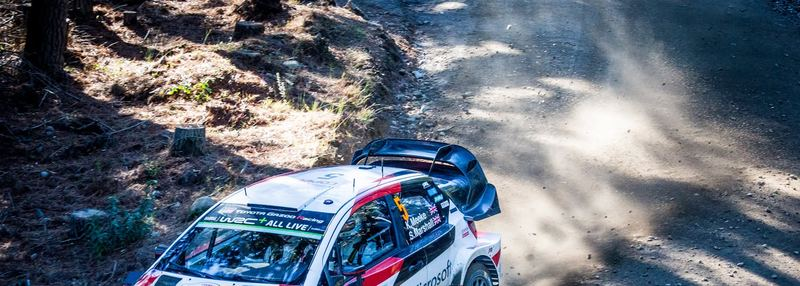
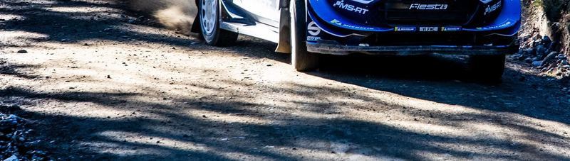
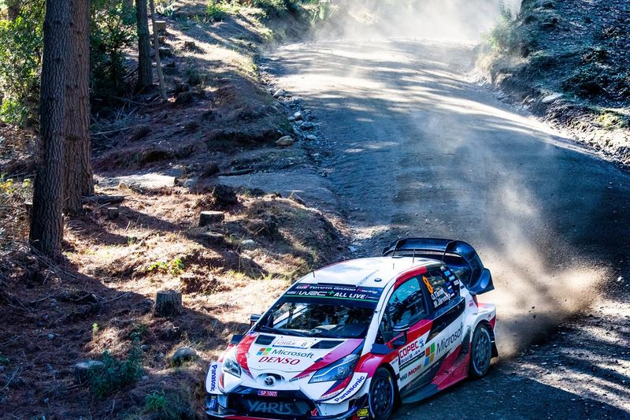
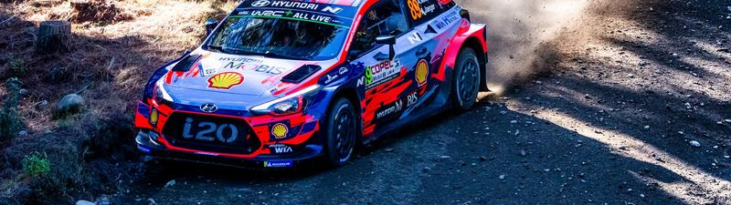
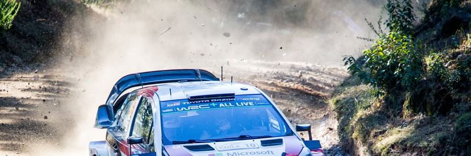
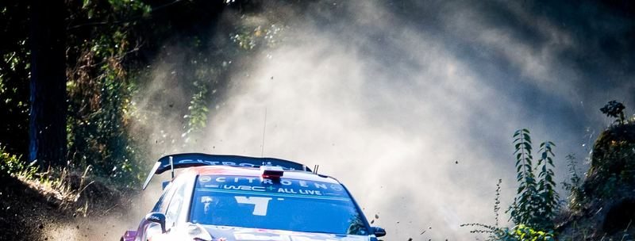
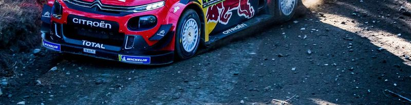
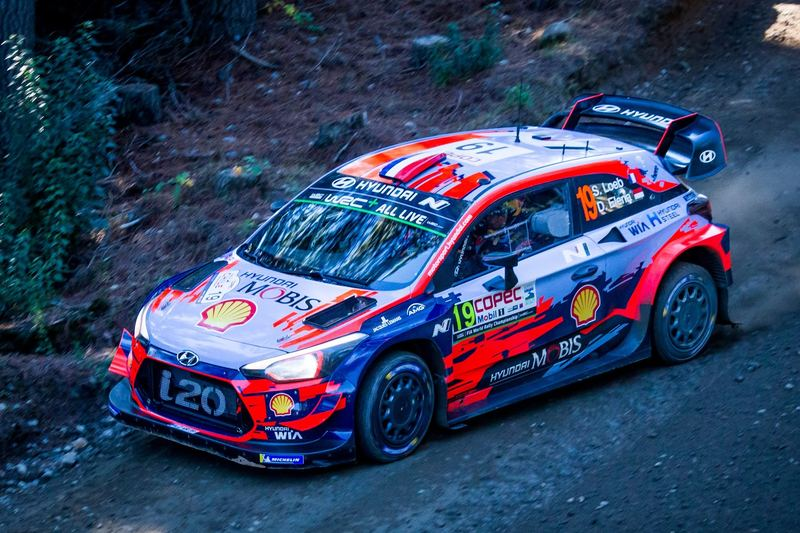
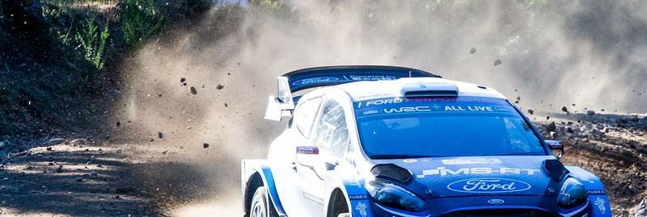
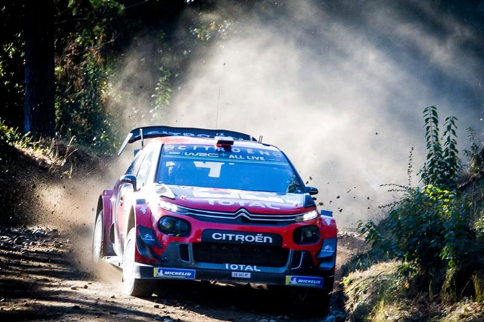
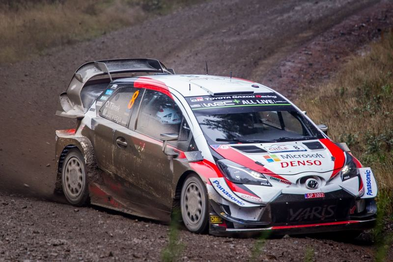
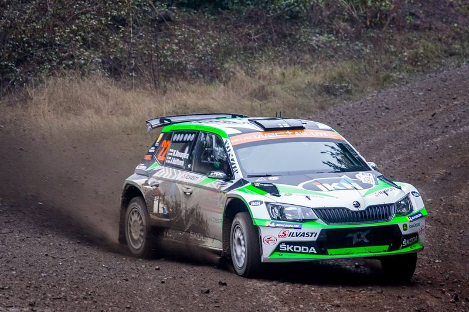
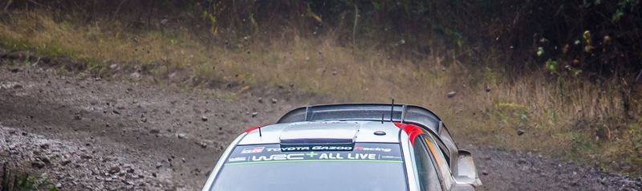
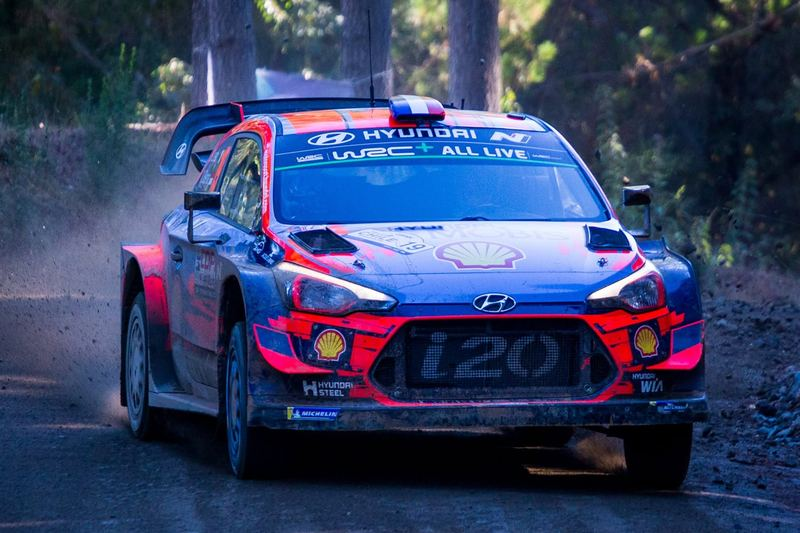
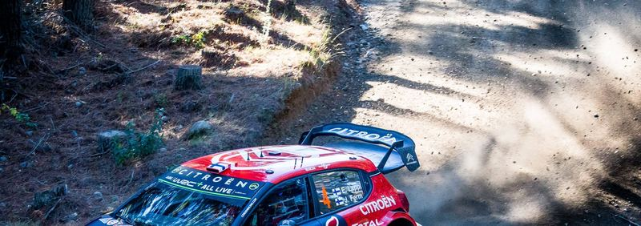
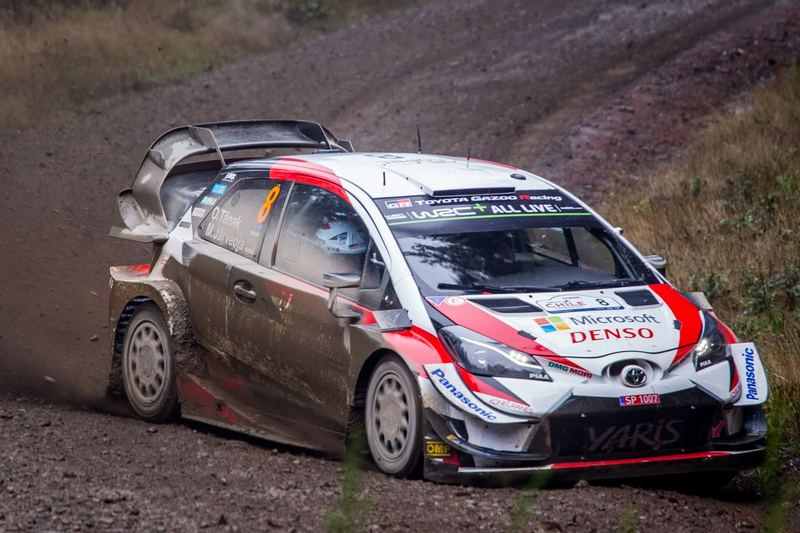
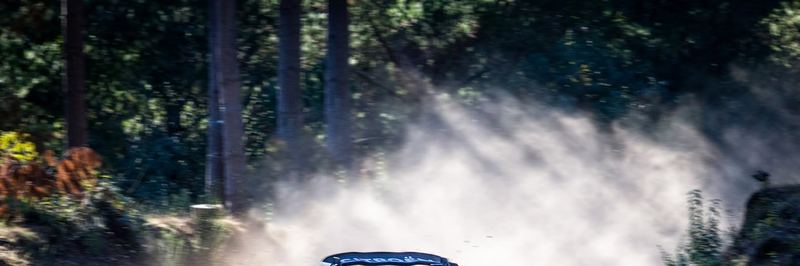
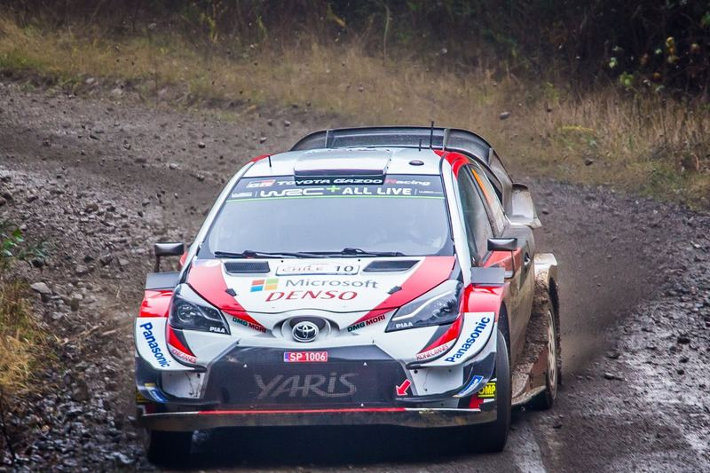
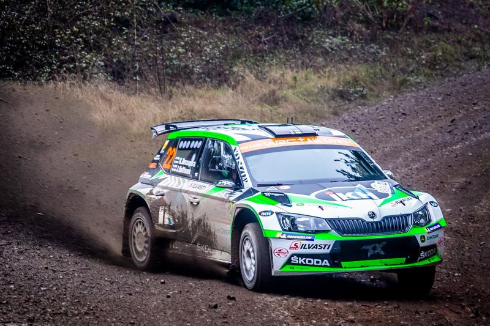
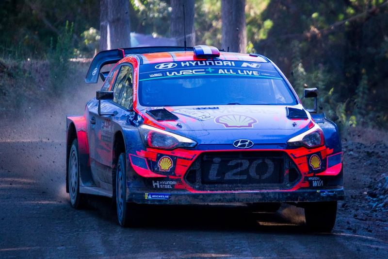
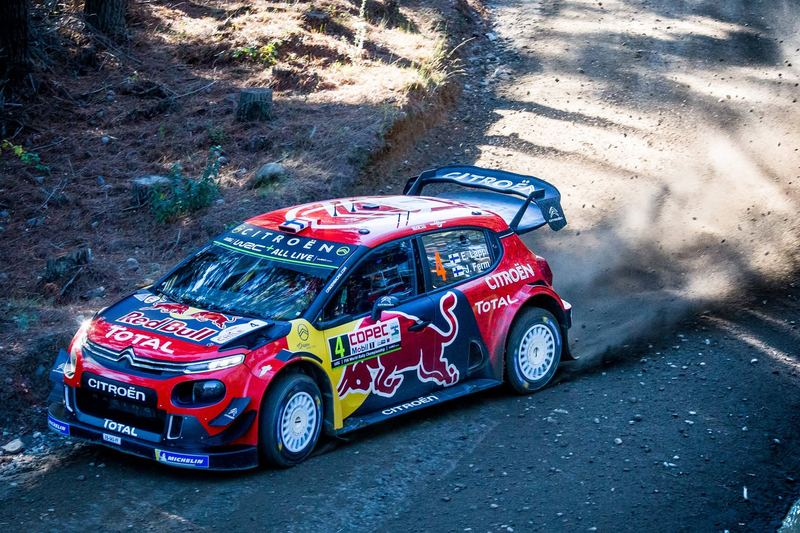
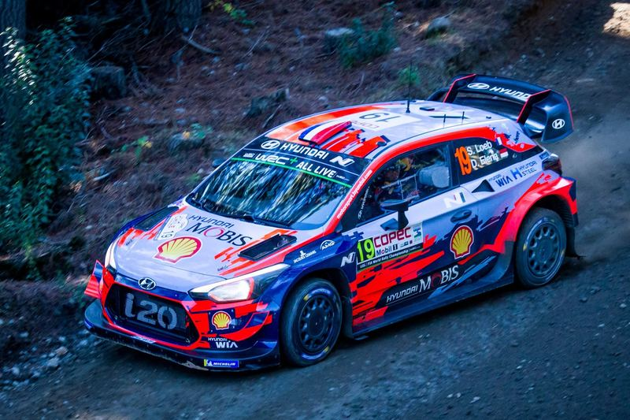
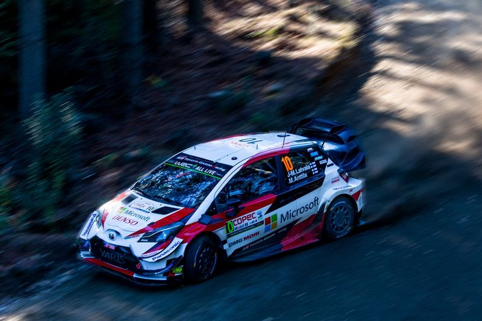
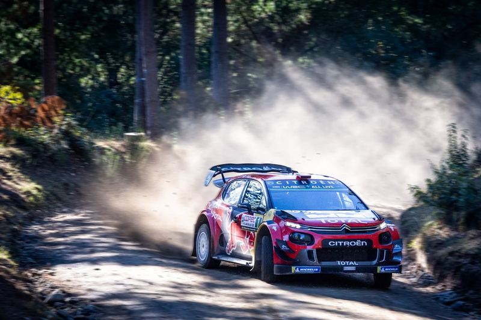
Need coverage like this?
Motorsport, events, aerials and commercial work — in Chile and abroad.
Get in touch WhatsApp